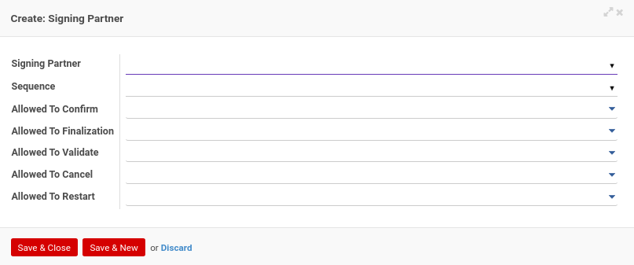
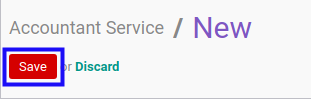

Terminologi
Konfigurasi
Accountant Service
Accountant Service adalah fitur yang digunakan untuk konfigurasi accountant service.
- Penjelasan Accountant Service
- Membuat Accountant Service
- Memodifikasi Accountant Service
- Menambahkan Signing Partner
- Memodifikasi Signing Partner
- Menghapus Signing Partner
- Menambahkan Opini
- Menghapus Opini
- Menambahkan Pertanyaan
- Memodifikasi Pertanyaan
- Menghapus Pertanyaan
- Menambahkan Jawaban
- Memodifikasi Jawaban
- Menghapus Jawaban
- Menambahkan Method
- Menghapus Method
- Menghapus Accountant Service
- Menonaktifkan Accountant Service
Penjelasan Accountant Service
Informasi pada Accountant Service dibagi menjadi beberapa bagian, yaitu:
- Header
- Tab Python Code
- Tab Signing Partner
- Tab Opinions
- Tab Quality Control
- Tab Methods
- Tab Policy
- Tab Description
HEADER
Name
Nama accountant service.
Internal Reference
Nomor referensi Internal.
Active
Penanda status accountant service aktif.
Assurance Service
Penanda status assurance service aktif.
Code
Kode accountant service.
Sequence Creation Method
Metode nomor urut pembuatan accountant service.
TAB PYTHON CODE
Python Code for Custom Sequence Generation
Kode Python untuk membuat nomor urut yang diinginkan.
TAB SIGNING PARTNER

Pop Up Signing Partner saat add an item diklik.

Signing Partner
Partner yang ditunjuk.
Sequence
Nomor urut.
Allowed To Confirm
Apabila aktif user dapat mengkonfirmasi.
Allowed To Validate
Apabila aktif user dapat memvalidasi.
Allowed To Cancel
Apabila aktif user dapat membatalkan.
Allowed To Restart
Apabila aktif user dapat merestart.
TAB OPINIONS

Opinion Required
Penanda dibutuhkan opinion aktif.
Pop Up Allowed Opinion saat add an item diklik.

Opinion
Nama opini.
Code
Kode opini.
TAB QUALITY CONTROL
Pop Up Questions saat add an item diklik.

Question
Item pertanyaan untuk kontrol kualitas.
Sequence
Urutan pertanyaan.
Type
Tipe jawaban untuk kontrol kualitas (kualitatif atau kuantitatif).
Min. Value
Nilai minimum jawaban.
Max. Value
Nilai maksimum jawaban.
Value
Jawaban.
Correct Answer
Penanda jawaban yang benar.
TAB METHODS

Method Required
Penanda dibutuhkan metode aktif.
Pop Up Allowed Method saat add an item diklik.

Method
Nama Metode.
Code
Kode Metode.
TAB POLICY

Allowed To Confirm
Apabila aktif user dapat mengkonfirmasi.
Allowed To Validate
Apabila aktif user dapat memvalidasi.
Allowed To Cancel
Apabila aktif user dapat membatalkan.
Allowed To Restart
Apabila aktif user dapat merestart.
TAB DESCRIPTION

Description
Deskripsi accountant service.
Membuat Accountant Service
A. INPUT
(Tidak ada instruksi khusus)
B. LANGKAH KERJA
- Buka menu Accountant Report -> Configuration -> Accountant Service. Abaikan jika sudah berada pada menu yang dimaksud.
- Klik tombol Create pada bagian atas-kiri form.

- Isi Name. Wajib diisi.
- Isi Internal Reference. Tidak wajib diisi.
- Aktifkan/ Deaktifkan Active. Tidak wajib diisi.
- Aktifkan/ Deaktifkan Assurance Service. Tidak wajib diisi.
- Isi Code. Tidak wajib diisi.
- Pilih Sequence Creation Method. Wajib diisi.
- Beralih ke tab Python Code.
- Isi Python Code for Custom Sequence Generation. Tidak wajib diisi.
- Beralih ke tab Signing Partner.
- Tambah/Modifikasi/Hapus Signing Partner. Ulangi langkah ini sampai Signing Partner sesuai dengan keinginan.
- Beralih ke tab Opinions.
- Aktifkan/ Deaktifkan Opinion Required. Tidak wajib diisi.
- Tambah/Hapus Opinion. Ulangi langkah ini sampai Opinion sesuai dengan keinginan.
- Beralih ke tab Quality Control.
- Tambah/Modifikasi/Hapus Question. Ulangi langkah ini sampai Question sesuai dengan keinginan.
- Beralih ke tab Methods.
- Aktifkan/ Deaktifkan Method Required. Tidak wajib diisi.
- Tambah/Hapus Method. Ulangi langkah ini sampai Method sesuai dengan keinginan.
- Beralih ke tab Policy.
- Pilih Allowed To Confirm. Tidak wajib diisi.
- Pilih Allowed To Validate. Tidak wajib diisi.
- Pilih Allowed To Cancel. Tidak wajib diisi.
- Pilih Allowed To Restart. Tidak wajib diisi.
- Isi Description. Tidak wajib diisi.
- Klik tombol Save pada bagian atas-kiri form.

C. OUTPUT
- Data Accountant Service akan terbuat.
Memodifikasi Accountant Service
A. INPUT
- User yang akan memodifikasi harus memiliki akses untuk memodifikasi konfigurasi Accountant Service.
B. LANGKAH KERJA
- Buka menu Accountant Report -> Configuration -> Accountant Service. Abaikan jika sudah berada pada menu yang dimaksud.
- Buka data Accountant Service yang akan dimodifikasi. Abaikan jika data sudah dibuka.
- Klik tombol Edit pada bagian atas-kiri form.
- Isi dan sesuaikan Name jika dibutuhkan. Wajib diisi.
- Isi dan sesuaikan Internal Reference jika dibutuhkan. Tidak wajib diisi.
- Aktifkan/ Deaktifkan Active jika dibutuhkan. Tidak wajib diisi.
- Aktifkan/ Deaktifkan Assurance Service jika dibutuhkan. Tidak wajib diisi.
- Isi dan sesuaikan Code jika dibutuhkan. Tidak wajib diisi.
- Pilih dan sesuaikan Sequence Creation Method jika dibutuhkan. Wajib diisi.
- Beralih ke tab Python Code.
- Isi dan sesuaikan Python Code for Custom Sequence Generation jika dibutuhkan. Tidak wajib diisi.
- Beralih ke tab Signing Partner.
- Tambah/Modifikasi/Hapus Signing Partner. Ulangi langkah ini sampai Signing Partner sesuai dengan keinginan.
- Beralih ke tab Opinions.
- Aktifkan/ Deaktifkan Opinion Required jika dibutuhkan. Tidak wajib diisi.
- Tambah/Hapus Opinion. Ulangi langkah ini sampai Opinion sesuai dengan keinginan.
- Beralih ke tab Quality Control.
- Tambah/Modifikasi/Hapus Question. Ulangi langkah ini sampai Question sesuai dengan keinginan.
- Beralih ke tab Methods.
- Aktifkan/ Deaktifkan Method Required jika dibutuhkan. Tidak wajib diisi.
- Tambah/Hapus Method. Ulangi langkah ini sampai Method sesuai dengan keinginan.
- Beralih ke tab Policy.
- Pilih dan sesuaikan Allowed To Confirm jika dibutuhkan. Tidak wajib diisi.
- Pilih dan sesuaikan Allowed To Validate jika dibutuhkan. Tidak wajib diisi.
- Pilih dan sesuaikan Allowed To Cancel jika dibutuhkan. Tidak wajib diisi.
- Pilih dan sesuaikan Allowed To Restart jika dibutuhkan. Tidak wajib diisi.
- Isi dan sesuaikan Description jika dibutuhkan. Tidak wajib diisi.
- Klik tombol Save pada bagian atas-kiri form.
C. OUTPUT
- Data Accountant Service akan berubah sesuai dengan perubahan yang dilakukan.
Menambahkan Signing Partner
(Instruksi kerja ini merupakan sub instruksi dari (1) Membuat Accountant Service, atau (2) Memodifikasi Accountant Service. Instruksi kerja ini tidak bisa berdiri sendiri)
A. INPUT
(Tidak ada instruksi khusus)
B. LANGKAH KERJA
- Klik label Add an Item pada bagian atas-kiri tabel Signing Partner

Pop-up Signing Partner akan muncul.
- Pilih Signing Partner. Wajib diisi.
- Pilih Sequence. Tidak wajib diisi.
- Pilih Allowed To Confirm. Tidak wajib diisi.
- Pilih Allowed To Validate. Tidak wajib diisi.
- Pilih Allowed To Cancel. Tidak wajib diisi.
- Pilih Allowed To Restart. Tidak wajib diisi.
- Klik tombol Save & Close pada bagian bawah-kiri pop-up Signing Partner untuk menyimpan data. Klik tombol Save & New pada bagian bawah-kiri pop-up Signing Partner untuk menyimpan data dan menambahkan data baru.


- Ulangi langkah ke-2 jika pada langkah ke-8 tombol Save & New yang dipilih.
- Lanjutkan langkah ke-12 instruksi kerja Membuat Accountant Service atau langkah ke-13 instruksi kerja Memodifikasi Accountant Service.
C. OUTPUT
(Tidak ada instruksi khusus)
Memodifikasi Signing Partner
(Instruksi kerja ini merupakan sub instruksi dari (1) Membuat Accountant Service, atau (2) Memodifikasi Accountant Service. Instruksi kerja ini tidak bisa berdiri sendiri)
A. INPUT
(Tidak ada instruksi khusus)
B. LANGKAH KERJA
- Buka data Signing Partner yang akan dimodifikasi.
- Pilih dan sesuaikan Signing Partner jika dibutuhkan. Wajib diisi.
- Pilih dan sesuaikan Sequence jika dibutuhkan. Tidak wajib diisi.
- Pilih dan sesuaikan Allowed To Confirm jika dibutuhkan. Tidak wajib diisi.
- Pilih dan sesuaikan Allowed To Validate jika dibutuhkan. Tidak wajib diisi.
- Pilih dan sesuaikan Allowed To Cancel jika dibutuhkan. Tidak wajib diisi.
- Pilih dan sesuaikan Allowed To Restart jika dibutuhkan. Tidak wajib diisi.
- Klik tombol Save pada bagian bawah-kiri form.

- Lanjutkan langkah ke-12 instruksi kerja Membuat Accountant Service atau langkah ke-13 instruksi kerja Memodifikasi Accountant Service.
C. OUTPUT
(Tidak ada instruksi khusus)
Menghapus Signing Partner
(Instruksi kerja ini merupakan sub instruksi dari (1) Membuat Accountant Service, atau (2) Memodifikasi Accountant Service. Instruksi kerja ini tidak bisa berdiri sendiri)
A. INPUT
(Tidak ada instruksi khusus)
B. LANGKAH KERJA
- Klik icon tempat sampah pada bagian kanan data Signing Partner yang akan dihapus.
- Ulangi langkah ke-1 untuk setiap Signing Partner yang akan dihapus.
- Lanjutkan langkah ke-12 instruksi kerja Membuat Accountant Service atau langkah ke-13 instruksi kerja Memodifikasi Accountant Service.
C. OUTPUT
(Tidak ada instruksi khusus)
Menambahkan Opini
(Instruksi kerja ini merupakan sub instruksi dari (1) Membuat Accountant Service, atau (2) Memodifikasi Accountant Service. Instruksi kerja ini tidak bisa berdiri sendiri)
A. INPUT
(Tidak ada instruksi khusus)
B. LANGKAH KERJA
- Klik label Add an Item pada bagian atas-kiri tabel Opinion

Pop-up Allowed Opinion akan muncul.
- Seleksi data Opinion.
- Klik tombol Select pada bagian bawah-kiri pop-up Allowed Opinion

- Lanjutkan langkah ke-15 instruksi kerja Membuat Accountant Service atau langkah ke-16 instruksi kerja Memodifikasi Accountant Service.
C. OUTPUT
(Tidak ada instruksi khusus)
Menghapus Opini
(Instruksi kerja ini merupakan sub instruksi dari (1) Membuat Accountant Service, atau (2) Memodifikasi Accountant Service. Instruksi kerja ini tidak bisa berdiri sendiri)
A. INPUT
(Tidak ada instruksi khusus)
B. LANGKAH KERJA
- Klik icon tempat sampah pada bagian kanan Opinion yang akan dihapus.
- Ulangi langkah ke-1 untuk setiap Opinion yang akan dihapus.
- Lanjutkan langkah ke-15 instruksi kerja Membuat Accountant Service atau langkah ke-16 instruksi kerja Memodifikasi Accountant Service.
C. OUTPUT
(Tidak ada instruksi khusus)
Menambahkan Pertanyaan
(Instruksi kerja ini merupakan sub instruksi dari (1) Membuat Accountant Service, atau (2) Memodifikasi Accountant Service. Instruksi kerja ini tidak bisa berdiri sendiri)
A. INPUT
(Tidak ada instruksi khusus)
B. LANGKAH KERJA
- Klik label Add an Item pada bagian atas-kiri tabel Question

Pop-up Questions akan muncul.


- Isi Question. Wajib diisi.
- Isi Sequence. Wajib diisi.
- Pilih Type. Wajib diisi.
- Tambah/Modifikasi/Hapus Answer untuk pilihan Type Qualitative. Ulangi langkah ini sampai Answer sesuai dengan keinginan.
- Isi nilai minimum dan maksimum untuk pilihan Type Quantitative. Wajib diisi.
- Klik tombol Save & Close pada bagian bawah-kiri pop-up Question untuk menyimpan data. Klik tombol Save & New pada bagian bawah-kiri pop-up Question untuk menyimpan data dan menambahkan data baru.

- Ulangi langkah ke-2 jika pada langkah ke-7 tombol Save & New yang dipilih.
- Lanjutkan langkah ke-17 instruksi kerja Membuat Accountant Service atau langkah ke-18 instruksi kerja Memodifikasi Accountant Service.
C. OUTPUT
(Tidak ada instruksi khusus)
Memodifikasi Pertanyaan
(Instruksi kerja ini merupakan sub instruksi dari (1) Membuat Accountant Service, atau (2) Memodifikasi Accountant Service. Instruksi kerja ini tidak bisa berdiri sendiri)
A. INPUT
(Tidak ada instruksi khusus)
B. LANGKAH KERJA
- Buka data Question yang akan dimodifikasi.
- Isi dan sesuaikan Question jika dibutuhkan. Wajib diisi.
- Isi dan sesuaikan Sequence jika dibutuhkan. Wajib diisi.
- Pilih dan sesuaikan Type jika dibutuhkan. Wajib diisi.
- Tambah/Modifikasi/Hapus Answer untuk pilihan Type Qualitative. Ulangi langkah ini sampai Answer sesuai dengan keinginan.
- Isi dan sesuaikan nilai minimum dan maksimum untuk pilihan Type Quantitative jika dibutuhkan. Wajib diisi.
- Klik tombol Save pada bagian bawah-kiri form.
- Lanjutkan langkah ke-17 instruksi kerja Membuat Accountant Service atau langkah ke-18 instruksi kerja Memodifikasi Accountant Service.
C. OUTPUT
(Tidak ada instruksi khusus)
Menghapus Pertanyaan
(Instruksi kerja ini merupakan sub instruksi dari (1) Membuat Accountant Service, atau (2) Memodifikasi Accountant Service. Instruksi kerja ini tidak bisa berdiri sendiri)
A. INPUT
(Tidak ada instruksi khusus)
B. LANGKAH KERJA
- Klik icon tempat sampah pada bagian kanan data Question yang akan dihapus.

- Ulangi langkah ke-1 untuk setiap Question yang akan dihapus.
- Lanjutkan langkah ke-17 instruksi kerja Membuat Accountant Service atau langkah ke-18 instruksi kerja Memodifikasi Accountant Service.
C. OUTPUT
(Tidak ada instruksi khusus)
Menambahkan Jawaban
(Instruksi kerja ini merupakan sub instruksi dari (1) Menambahkan Pertanyaan, atau (2) Memodifikasi Pertanyaan. Instruksi kerja ini tidak bisa berdiri sendiri)
A. INPUT
(Tidak ada instruksi khusus)
B. LANGKAH KERJA
- Klik label Add an Item pada bagian atas-kiri tabel Answer

- Isi Value. Wajib diisi.
- Aktifkan/ Deaktifkan Correct Answer. Tidak wajib diisi.
- Klik tombol Save & Close pada bagian bawah-kiri pop-up Answer untuk menyimpan data. Klik tombol Save & New pada bagian bawah-kiri pop-up Answer untuk menyimpan data dan menambahkan data baru.

- Ulangi mulai langkah ke-1 jika pada langkah ke-4 tombol Save & New yang dipilih.
- Lanjutkan langkah ke-5 instruksi kerja Menambahkan Pertanyaan atau langkah ke-5 instruksi kerja Memodifikasi Pertanyaan.
C. OUTPUT
(Tidak ada instruksi khusus)
Memodifikasi Jawaban
(Instruksi kerja ini merupakan sub instruksi dari (1) Menambahkan Pertanyaan, atau (2) Memodifikasi Pertanyaan. Instruksi kerja ini tidak bisa berdiri sendiri)
A. INPUT
(Tidak ada instruksi khusus)
B. LANGKAH KERJA
- Isi dan sesuaikan Value jika dibutuhkan. Wajib diisi.
- Aktifkan/ Deaktifkan Correct Answer jika dibutuhkan. Tidak wajib diisi.
- Klik tombol Save pada bagian bawah-kiri form.
- Lanjutkan langkah ke-5 instruksi kerja Menambahkan Pertanyaan atau langkah ke-5 instruksi kerja Memodifikasi Pertanyaan.
C. OUTPUT
(Tidak ada instruksi khusus)
Menghapus Jawaban
(Instruksi kerja ini merupakan sub instruksi dari (1) Menambahkan Pertanyaan, atau (2) Memodifikasi Pertanyaan. Instruksi kerja ini tidak bisa berdiri sendiri)
A. INPUT
(Tidak ada instruksi khusus)
B. LANGKAH KERJA
- Klik icon tempat sampah pada bagian kanan Answer yang akan dihapus.

- Ulangi langkah ke-1 untuk setiap Answer yang akan dihapus.
- Lanjutkan langkah ke-5 instruksi kerja Menambahkan Pertanyaan atau langkah ke-5 instruksi kerja Memodifikasi Pertanyaan.
C. OUTPUT
(Tidak ada instruksi khusus)
Menambahkan Method
(Instruksi kerja ini merupakan sub instruksi dari (1) Membuat Accountant Service, atau (2) Memodifikasi Accountant Service. Instruksi kerja ini tidak bisa berdiri sendiri)
A. INPUT
(Tidak ada instruksi khusus)
B. LANGKAH KERJA
- Klik label Add an Item pada bagian atas-kiri tabel Method
Pop-up Allowed Methods akan muncul.
- Seleksi data Method.
- Klik tombol Select pada bagian bawah-kiri pop-up Allowed Methods

- Lanjutkan langkah ke-20 instruksi kerja Membuat Accountant Service atau langkah ke-21 instruksi kerja Memodifikasi Accountant Service.
C. OUTPUT
(Tidak ada instruksi khusus)
Menghapus Method
(Instruksi kerja ini merupakan sub instruksi dari (1) Membuat Accountant Service, atau (2) Memodifikasi Accountant Service. Instruksi kerja ini tidak bisa berdiri sendiri)
A. INPUT
(Tidak ada instruksi khusus)
B. LANGKAH KERJA
- Klik icon tempat sampah pada bagian kanan Method yang akan dihapus.

- Ulangi langkah ke-1 untuk setiap Method yang akan dihapus.
- Lanjutkan langkah ke-20 instruksi kerja Membuat Accountant Service atau langkah ke-21 instruksi kerja Memodifikasi Accountant Service.
C. OUTPUT
(Tidak ada instruksi khusus)
Menghapus Accountant Service
A. INPUT
- User yang akan menghapus harus memiliki akses untuk menghapus Accountant Service.
B. LANGKAH KERJA
- Buka menu Accountant Report -> Configuration -> Accountant Service. Abaikan jika sudah berada pada menu yang dimaksud.
- Buka data Accountant Service yang akan dihapus. Abaikan jika data sudah dibuka.
- Klik tombol More pada bagian atas-tengah form.
- Klik tombol Delete pada dropdown yang muncul ketika tombol More diklik.
- Klik tombol Ok pada pop-up konfirmasi penghapusan yang muncul.
C. OUTPUT
- Data Accountant Service akan terhapus.
Menonaktifkan Accountant Service
- Data Accountant Service yang akan dinonaktifkan harus memiliki status Active
B. LANGKAH KERJA
- Buka menu Accountant Report -> Configuration -> Accountant Service. Abaikan jika sudah berada pada menu yang dimaksud.
- Buka data Accountant Service yang akan dinonaktifkan. Abaikan jika data sudah dibuka.
- Klik tombol Edit pada bagian atas-kiri form.
-
Deaktifkan Active.
-
Klik tombol Save pada bagian atas-kiri form.
C. OUTPUT
- Data Accountant Service akan non aktif.
Partner Arrangement
Partner Arrangement adalah fitur yang digunakan untuk konfigurasi partner arrangement.
- Penjelasan Partner Arrangement
- Membuat Partner Arrangement
- Memodifikasi Partner Arrangement
- Menambahkan Partner
- Menghapus Partner
- Menghapus Partner Arrangement
- Mengkonfirmasi Partner Arrangement
- Memvalidasi Partner Arrangement
- Membatalkan Partner Arrangement
- Merestart Partner Arrangement
- Menonaktifkan Partner Arrangement
Penjelasan Partner Arrangement
Informasi pada Partner Arrangement dibagi menjadi beberapa bagian, yaitu:
HEADER

# Partner Arrangement
Nomor dokumen.
Managing Partner
Nama managing partner.
Arrangement Date
Tanggal arrangement.
TAB PARTNER(S)
Pop Up Partners saat add an item diklik.


Name
Nama partner.
Phone
Nomor telepon partner.
Alamat email partner.
Main Sector
Nama sektor utama partner.
TAB NOTE

Note
Catatan.
TAB POLICY

Can Confirm
Kebijakan untuk dapat mengkonfirmasi.
Can Validate
Kebijakan untuk dapat memvalidasi.
Can Cancel
Kebijakan untuk dapat membatalkan.
Can Restart
Kebijakan untuk dapat merestart.
Membuat Partner Arrangement
A. INPUT
(Tidak ada instruksi khusus)
B. LANGKAH KERJA
- Buka menu Accountant Report -> Configuration -> Partner Arrangement. Abaikan jika sudah berada pada menu yang dimaksud.
- Klik tombol Create pada bagian atas-kiri form.

- Ubah # Partner Arrangement dengan penomeran yang dikehendaki. Biarkan berisi / apabila menghendaki penomeran otomatis.
- Pilih Managing Partner. Wajib diisi.
- Pilih Arrangement Date. Wajib diisi.
- Beralih ke tab Partner.
- Tambah/Hapus Partner. Ulangi langkah ini sampai Partner sesuai dengan keinginan.
- Beralih ke tab Note.
- Isi Note. Tidak wajib diisi.
- Beralih ke tab Policy.
- Aktifkan/ Deaktifkan Can Confirm. Tidak wajib diisi.
- Aktifkan/ Deaktifkan Can Validate. Tidak wajib diisi.
- Aktifkan/ Deaktifkan Can Cancel. Tidak wajib diisi.
- Aktifkan/ Deaktifkan Can Restart. Tidak wajib diisi.
- Klik tombol Save pada bagian atas-kiri form.
C. OUTPUT
- Data Partner Arrangement akan terbuat.
Memodifikasi Partner Arrangement
A. INPUT
- Data Partner Arrangement yang dapat dimodifikasi harus memiliki status Draft.
- User yang akan memodifikasi harus memiliki akses untuk memodifikasi Partner Arrangement.
B. LANGKAH KERJA
- Buka menu Accountant Report -> Configuration -> Partner Arrangement. Abaikan jika sudah berada pada menu yang dimaksud.
- Buka data Partner Arrangement yang akan dimodifikasi. Abaikan jika data sudah dibuka.
- Klik tombol Edit pada bagian atas-kiri form.
- Ubah # Partner Arrangement dengan penomeran yang dikehendaki. Biarkan berisi / apabila menghendaki penomeran otomatis.
- Pilih dan sesuaikan Managing Partner jika dibutuhkan. Wajib diisi.
- Pilih dan sesuaikan Arrangement Date jika dibutuhkan. Wajib diisi.
- Beralih ke tab Partner.
- Tambah/Hapus Partner. Ulangi langkah ini sampai Partner sesuai dengan keinginan.
- Beralih ke tab Note.
- Isi dan sesuaikan Note jika dibutuhkan. Tidak wajib diisi.
- Beralih ke tab Policy.
- Aktifkan/ Deaktifkan Can Confirm jika dibutuhkan. Tidak wajib diisi.
- Aktifkan/ Deaktifkan Can Validate jika dibutuhkan. Tidak wajib diisi.
- Aktifkan/ Deaktifkan Can Cancel jika dibutuhkan. Tidak wajib diisi.
- Aktifkan/ Deaktifkan Can Restart jika dibutuhkan. Tidak wajib diisi.
- Klik tombol Save pada bagian atas-kiri form.

C. OUTPUT
- Data Partner Arrangement akan berubah sesuai dengan perubahan yang dilakukan.
Menambahkan Partner
(Instruksi kerja ini merupakan sub instruksi dari (1) Membuat Partner Arrangement, atau (2) Memodifikasi Partner Arrangement. Instruksi kerja ini tidak bisa berdiri sendiri)
A. INPUT
(Tidak ada instruksi khusus)
B. LANGKAH KERJA
- Klik label Add an Item pada bagian atas-kiri tabel Partner

Pop-up Partner akan muncul.
- Seleksi data Partner.
- Klik tombol Select pada bagian bawah-kiri pop-up Partner
- Lanjutkan langkah ke-7 instruksi kerja Membuat Partner Arrangement atau langkah ke-8 instruksi kerja Memodifikasi Partner Arrangement.
C. OUTPUT
(Tidak ada instruksi khusus)
Menghapus Partner
(Instruksi kerja ini merupakan sub instruksi dari (1) Membuat Partner Arrangement, atau (2) Memodifikasi Partner Arrangement. Instruksi kerja ini tidak bisa berdiri sendiri)
A. INPUT
(Tidak ada instruksi khusus)
B. LANGKAH KERJA
- Klik icon tempat sampah pada bagian kanan Partner yang akan dihapus.

- Klik tombol Ok pada pop-up konfirmasi penghapusan yang muncul.
- Ulangi langkah ke-1 untuk setiap Partner yang akan dihapus.
- Lanjutkan langkah ke-7 instruksi kerja Membuat Partner Arrangement atau langkah ke-8 instruksi kerja Memodifikasi Partner Arrangement.
C. OUTPUT
(Tidak ada instruksi khusus)
Menghapus Partner Arrangement
A. INPUT
- Data Partner Arrangement yang dapat dihapus harus memiliki status Draft.
- User yang akan menghapus harus memiliki akses untuk menghapus Partner Arrangement.
B. LANGKAH KERJA
- Buka menu Accountant Report -> Configuration -> Partner Arrangement. Abaikan jika sudah berada pada menu yang dimaksud.
- Buka data Partner Arrangement yang akan dihapus. Abaikan jika data sudah dibuka.
- Klik tombol More pada bagian atas-tengah form.

- Klik tombol Delete pada dropdown yang muncul ketika tombol More diklik.

- Klik tombol Ok pada pop-up konfirmasi penghapusan yang muncul.

C. OUTPUT
- Data Partner Arrangement akan terhapus.
Mengkonfirmasi Partner Arrangement
A. INPUT
- Data Partner Arrangement yang dapat dikonfirmasi harus memiliki status Draft.
- User yang akan mengkonfirmasi harus memiliki akses untuk mengkonfirmasi Partner Arrangement.
B. LANGKAH KERJA
- Buka menu Accountant Report -> Configuration -> Partner Arrangement. Abaikan jika sudah berada pada menu yang dimaksud.
- Buka data Partner Arrangement yang akan dikonfirmasi. Abaikan jika data sudah dibuka.
- Klik tombol Confirm pada bagian atas-kiri form.

C. OUTPUT
- Status dari Partner Arrangement akan berubah menjadi Waiting for Approval.
- Isian Partner Arrangement sudah tidak bisa diubah.
Memvalidasi Partner Arrangement
A. INPUT
- Data Partner Arrangement yang divalidasi harus memiliki status Waiting for Approval
- User yang akan memvalidasi harus memiliki akses untuk memvalidasi Partner Arrangement.
B. LANGKAH KERJA
- Buka menu Accountant Report -> Configuration -> Partner Arrangement. Abaikan jika sudah berada pada menu yang dimaksud.
- Buka data Partner Arrangement yang akan divalidasi. Abaikan jika data sudah dibuka.
- Klik tombol Valid pada bagian atas-kiri form.
C. OUTPUT
- Status Partner Arrangement akan berubah menjadi Valid.
Membatalkan Partner Arrangement
A. INPUT
- Data Partner Arrangement yang akan dibatalkan harus memiliki status selain Cancel.

- User yang akan membatalkan harus memiliki akses untuk membatalkan Partner Arrangement
B. LANGKAH KERJA
- Buka menu Accountant Report -> Configuration -> Partner Arrangement. Abaikan jika sudah berada pada menu yang dimaksud.
- Buka data Partner Arrangement yang akan dibatalkan. Abaikan jika data sudah dibuka.
- Klik tombol Cancel pada bagian atas-kiri form.

C. OUTPUT
- Status dari Partner Arrangement akan berubah menjadi Cancel

Merestart Partner Arrangement
A. INPUT
- Data Partner Arrangement yang akan direstart harus memiliki status Cancel.
- User yang akan merestart harus memiliki akses untuk merestart Partner Arrangement.
B. LANGKAH KERJA
- Buka menu Accountant Report -> Configuration -> Partner Arrangement. Abaikan jika sudah berada pada menu yang dimaksud.
- Buka data Partner Arrangement yang akan direstart. Abaikan jika data sudah dibuka.
- Klik tombol Restart pada bagian atas-kiri form.

C. OUTPUT
- Status dari Partner Arrangement akan berubah menjadi Draft.
- Partner Arrangement dapat kembali dimodifikasi.
Menonaktifkan Partner Arrangement
Accountant Report Opinion
Accountant Report Opinion adalah fitur yang digunakan untuk mengatur master data opini assurance report
- Penjelasan Accountant Report Opinion
- Membuat Accountant Report Opinion
- Memodifikasi Accountant Report Opinion
- Menghapus Accountant Report Opinion
- Menonaktifkan Accountant Report Opinion
Penjelasan Accountant Report Opinion
Informasi pada Accountant Report Opinion dibagi menjadi beberapa bagian, yaitu:
HEADER
Opinion
Opini.
Code
Kode opini.
Active
Penanda status accountant report opinion aktif.
Description
Deskripsi.
Membuat Accountant Report Opinion
A. INPUT
(Tidak ada instruksi khusus)
B. LANGKAH KERJA
- Buka menu Accountant Report -> Configuration -> Accountant Report Opinion. Abaikan jika sudah berada pada menu yang dimaksud.
- Klik tombol Create pada bagian atas-kiri form.
- Isi Opinion. Wajib diisi.
- Isi Code. Wajib diisi.
- Aktifkan/ Deaktifkan Active. Tidak wajib diisi.
- Isi Description. Tidak wajib diisi.
- Klik tombol Save pada bagian atas-kiri form.

C. OUTPUT
- Data Accountant Report Opinion akan terbuat.
Memodifikasi Accountant Report Opinion
A. INPUT
- User yang akan memodifikasi harus memiliki akses untuk memodifikasi konfigurasi Accountant Report Opinion.
B. LANGKAH KERJA
- Buka menu Accountant Report -> Configuration -> Accountant Report Opinion. Abaikan jika sudah berada pada menu yang dimaksud.
- Buka data Accountant Report Opinion yang akan dimodifikasi. Abaikan jika data sudah dibuka.
- Klik tombol Edit pada bagian atas-kiri form.
- Isi dan sesuaikan Opinion jika dibutuhkan. Wajib diisi.
- Isi dan sesuaikan Code jika dibutuhkan. Wajib diisi.
- Aktifkan/ Deaktifkan Active jika dibutuhkan. Tidak wajib diisi.
- Isi dan sesuaikan Description jika dibutuhkan. Tidak wajib diisi.
- Klik tombol Save pada bagian atas-kiri form.

C. OUTPUT
- Data Accountant Report Opinion akan berubah sesuai dengan perubahan yang dilakukan.
Menghapus Accountant Report Opinion
A. INPUT
- User yang akan menghapus harus memiliki akses untuk menghapus Accountant Report Opinion.
B. LANGKAH KERJA
- Buka menu Accountant Report -> Configuration -> Accountant Report Opinion. Abaikan jika sudah berada pada menu yang dimaksud.
- Buka data Accountant Report Opinion yang akan dihapus. Abaikan jika data sudah dibuka.
- Klik tombol More pada bagian atas-tengah form.

- Klik tombol Delete pada dropdown yang muncul ketika tombol More diklik.

- Klik tombol Ok pada pop-up konfirmasi penghapusan yang muncul.
C. OUTPUT
- Data Accountant Report Opinion akan terhapus.
Menonaktifkan Accountant Report Opinion
- Data Accountant Report Opinion yang akan dinonaktifkan harus memiliki status Active

B. LANGKAH KERJA
- Buka menu Accountant Report -> Configuration -> Accountant Report Opinion. Abaikan jika sudah berada pada menu yang dimaksud.
- Buka data Accountant Report Opinion yang akan dinonaktifkan. Abaikan jika data sudah dibuka.
- Klik tombol Edit pada bagian atas-kiri form.
-
Deaktifkan Active.
-
Klik tombol Save pada bagian atas-kiri form.
C. OUTPUT
- Data Accountant Report Opinion akan non aktif.
Accountant Report Method
Accountant Report Method adalah fitur yang digunakan untuk konfigurasi accountant report method.
- Penjelasan Accountant Report Method
- Membuat Accountant Report Method
- Memodifikasi Accountant Report Method
- Menghapus Accountant Report Method
- Menonaktifkan Accountant Report Method
Penjelasan Accountant Report Method
Informasi pada Accountant Report Method dibagi menjadi beberapa bagian, yaitu:
HEADER

Method
Metode.
Code
Kode metode.
Active
Penanda status accountant report method aktif.
Description
Deskripsi.
Membuat Accountant Report Method
A. INPUT
(Tidak ada instruksi khusus)
B. LANGKAH KERJA
- Buka menu Accountant Report -> Configuration -> Accountant Report Method. Abaikan jika sudah berada pada menu yang dimaksud.
- Klik tombol Create pada bagian atas-kiri form.

- Isi Method. Wajib diisi.
- Isi Code. Wajib diisi.
- Aktifkan/ Deaktifkan Active. Tidak wajib diisi.
- Isi Description. Tidak wajib diisi.
- Klik tombol Save pada bagian atas-kiri form.

C. OUTPUT
- Data Accountant Report Method akan terbuat.
Memodifikasi Accountant Report Method
A. INPUT
- User yang akan memodifikasi harus memiliki akses untuk memodifikasi konfigurasi Accountant Report Method.
B. LANGKAH KERJA
- Buka menu Accountant Report -> Configuration -> Accountant Report Method. Abaikan jika sudah berada pada menu yang dimaksud.
- Buka data Accountant Report Method yang akan dimodifikasi. Abaikan jika data sudah dibuka.
- Klik tombol Edit pada bagian atas-kiri form.

- Isi dan sesuaikan Method jika dibutuhkan. Wajib diisi.
- Isi dan sesuaikan Code jika dibutuhkan. Wajib diisi.
- Aktifkan/ Deaktifkan Active jika dibutuhkan. Tidak wajib diisi.
- Isi dan sesuaikan Description jika dibutuhkan. Tidak wajib diisi.
- Klik tombol Save pada bagian atas-kiri form.
C. OUTPUT
- Data Accountant Report Method akan berubah sesuai dengan perubahan yang dilakukan.
Menghapus Accountant Report Method
A. INPUT
- User yang akan menghapus harus memiliki akses untuk menghapus Accountant Report Method.
B. LANGKAH KERJA
- Buka menu Accountant Report -> Configuration -> Accountant Report Method. Abaikan jika sudah berada pada menu yang dimaksud.
- Buka data Accountant Report Method yang akan dihapus. Abaikan jika data sudah dibuka.
- Klik tombol More pada bagian atas-tengah form.

- Klik tombol Delete pada dropdown yang muncul ketika tombol More diklik.

- Klik tombol Ok pada pop-up konfirmasi penghapusan yang muncul.
C. OUTPUT
- Data Accountant Report Method akan terhapus.
Menonaktifkan Accountant Report Method
- Data Accountant Report Method yang akan dinonaktifkan harus memiliki status Active
B. LANGKAH KERJA
- Buka menu Accountant Report -> Configuration -> Accountant Report Method. Abaikan jika sudah berada pada menu yang dimaksud.
- Buka data Accountant Report Method yang akan dinonaktifkan. Abaikan jika data sudah dibuka.
- Klik tombol Edit pada bagian atas-kiri form.
-
Deaktifkan Active.
-
Klik tombol Save pada bagian atas-kiri form.
C. OUTPUT
- Data Accountant Report Method akan non aktif.